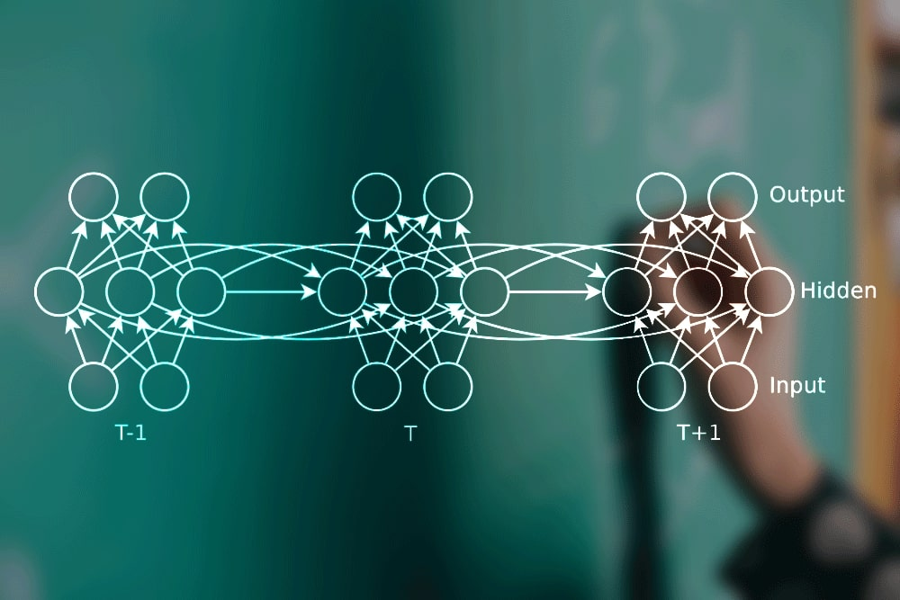

Understanding RNNs, GRUs, and LSTMs
Many real-world phenomena unfold sequentially: the words in this sentence, the notes in a melody, the price of a stock over time. Standard feedforward neural networks process fixed-size inputs independently, making them unsuitable for tasks where order and context matter. This is where **Recurrent Neural Networks (RNNs)** and their more advanced variants, **Gated Recurrent Units (GRUs)** and **Long Short-Term Memory (LSTMs)**, come into play. These architectures are designed specifically to handle sequential data by incorporating a notion of memory.
Recurrent Neural Networks (RNNs): The Foundation
The core idea behind an RNN is simple yet powerful: **process sequences one element at a time, maintaining a 'memory' or 'state' that captures information about previous elements.** Think about reading: you understand each word based on the words that came before it. RNNs mimic this by using a loop.
Architecture and Mechanism
At each timestep $t$ in a sequence, an RNN takes two inputs:
- The current input element $x_t$ (e.g., a word embedding).
- The hidden state $h_{t-1}$ from the previous timestep, which acts as the network's memory.
Using these inputs, the RNN computes:
- A new hidden state $h_t$, which captures information from both the current input and the past context.
- An output $y_t$ (optional, depending on the task, e.g., predicting the next word, classifying the sequence).
The crucial part is the **recurrent connection**: the hidden state $h_t$ computed at timestep $t$ becomes the input $h_{t-1}$ for the next timestep $t+1$. This loop allows information to continue through the sequence.
Mathematical Formulation
The calculations within a simple RNN cell at timestep $t$ are typically defined as:
$$ h_t = \tanh(W_{hh} h_{t-1} + W_{xh} x_t + b_h) \label{eq:rnn_h} \tag{1} $$ $$ y_t = W_{hy} h_t + b_y \label{eq:rnn_y} \tag{2} $$Let's break this down:
- $x_t$: Input vector at timestep $t$.
- $h_{t-1}$: Hidden state vector from the previous timestep ($h_0$ is usually initialized to zeros).
- $h_t$: Hidden state vector at the current timestep.
- $y_t$: Output vector at timestep $t$.
- $W_{xh}$: Weight matrix mapping input $x_t$ to the hidden state computation.
- $W_{hh}$: Weight matrix mapping the previous hidden state $h_{t-1}$ to the current hidden state computation (the recurrent weight).
- $W_{hy}$: Weight matrix mapping the hidden state $h_t$ to the output $y_t$.
- $b_h, b_y$: Bias vectors for the hidden state and output computations, respectively.
- $\tanh$: Hyperbolic tangent activation function, typically used to keep the hidden state values bounded between -1 and 1. (Other activations like ReLU can sometimes be used, but tanh is traditional).
Importantly, the weight matrices ($W_{xh}, W_{hh}, W_{hy}$) and biases ($b_h, b_y$) are **shared across all timesteps**. This means the network learns a single set of parameters to apply at every step of the sequence, making it efficient and capable of generalizing across different sequence lengths.
Suitable Data and Applications
RNNs excel wherever order matters. Examples include:
- Natural Language Processing (NLP): Language modeling (predicting the next word), machine translation, sentiment analysis, text generation.
- Time Series Analysis: Stock market prediction, weather forecasting, anomaly detection in sensor data.
- Speech Recognition: Transcribing spoken audio into text.
- Bioinformatics: Analyzing DNA or protein sequences.
Limitations: The Gradient Problem
While elegant, simple RNNs struggle with learning long-range dependencies in sequences. During training (using backpropagation through time, BPTT), gradients need to flow backward through the recurrent connections. For long sequences, these gradients can either:
- Vanish: Become extremely small, preventing earlier layers/timesteps from learning effectively.
- Explode: Become excessively large, causing unstable training.
This makes it difficult for simple RNNs to connect information across many timesteps, like linking a pronoun near the end of a long paragraph back to a subject mentioned at the beginning.
Long Short-Term Memory (LSTM): Remembering the Important Stuff
LSTMs were specifically designed by Hochreiter & Schmidhuber (1997) to overcome the vanishing gradient problem and learn long-range dependencies. They achieve this using a more complex internal structure involving **gates** and a dedicated **cell state**.
Architecture: Gates and Cell State
An LSTM cell maintains two key states that are passed from one timestep to the next:
- The **hidden state $h_t$** (similar to RNNs, often called the "short-term memory").
- The **cell state $C_t$** (often called the "long-term memory"). This works like a moving belt, letting information travel through the sequence mostly unchanged, unless gates clearly change it.
The flow of information into, out of, and within the cell state is controlled by three main gates:
- Forget Gate ($f_t$): Decides which information to throw away from the cell state $C_{t-1}$.
- Input Gate ($i_t$): Decides which new information (from the current input $x_t$ and previous hidden state $h_{t-1}$) should be stored in the cell state. It works together with a candidate cell state $\tilde{C}_t$.
- Output Gate ($o_t$): Decides what parts of the (updated) cell state $C_t$ should be output as the new hidden state $h_t$.
These gates use sigmoid activation functions ($\sigma$), which output values between 0 and 1. A value close to 0 means "let nothing through," while a value close to 1 means "let everything through."
Mathematical Formulation
At timestep $t$, given $x_t$, $h_{t-1}$, and $C_{t-1}$, the LSTM computes:
- **Forget Gate:** Decide what to forget from the old cell state. $$ f_t = \sigma(W_f [h_{t-1}, x_t] + b_f) \label{eq:lstm_f} \tag{3} $$
- **Input Gate:** Decide what new information to store. $$ i_t = \sigma(W_i [h_{t-1}, x_t] + b_i) \label{eq:lstm_i} \tag{4} $$
- **Candidate Cell State:** Create a vector of new candidate values to potentially add. $$ \tilde{C}_t = \tanh(W_C [h_{t-1}, x_t] + b_C) \label{eq:lstm_C_tilde} \tag{5} $$
- **Cell State Update:** Update the old cell state $C_{t-1}$ to the new cell state $C_t$. $$ C_t = f_t \odot C_{t-1} + i_t \odot \tilde{C}_t \label{eq:lstm_C} \tag{6} $$
- **Output Gate:** Decide what parts of the cell state to output. $$ o_t = \sigma(W_o [h_{t-1}, x_t] + b_o) \label{eq:lstm_o} \tag{7} $$
- **Hidden State Update:** Compute the new hidden state. $$ h_t = o_t \odot \tanh(C_t) \label{eq:lstm_h} \tag{8} $$
Here:
- $[h_{t-1}, x_t]$: Concatenation of the previous hidden state and current input vectors.
- $W_f, W_i, W_C, W_o$: Weight matrices for the respective gates/candidate state.
- $b_f, b_i, b_C, b_o$: Bias vectors for the respective gates/candidate state.
- $\sigma$: Sigmoid activation function.
- $\tanh$: Hyperbolic tangent activation function.
- $\odot$: Element-wise multiplication (Hadamard product).
The cell state update \eqref{eq:lstm_C} is key: the forget gate $f_t$ scales the previous cell state $C_{t-1}$, and the input gate $i_t$ scales the new candidate information $\tilde{C}_t$. This additive interaction (rather than repeated matrix multiplication as in simple RNNs) helps gradients flow better over long sequences.
Gated Recurrent Unit (GRU)
Introduced by Cho et al. (2014), the GRU is another type of gated RNN designed to address the same problems as LSTMs but with a simpler architecture.
Architecture: Fewer Gates
GRUs have only two gates and do not maintain a separate cell state:
- Reset Gate ($r_t$): Determines how much of the previous hidden state $h_{t-1}$ to forget when computing the candidate hidden state.
- Update Gate ($z_t$): Determines how much of the previous hidden state $h_{t-1}$ to keep versus how much of the new candidate hidden state $\tilde{h}_t$ to incorporate into the final hidden state $h_t$. It combines the roles of LSTM's forget and input gates.
Mathematical Formulation
Given $x_t$ and $h_{t-1}$, the GRU computes:
- **Reset Gate:** $$ r_t = \sigma(W_r [h_{t-1}, x_t] + b_r) \label{eq:gru_r} \tag{9} $$
- **Update Gate:** $$ z_t = \sigma(W_z [h_{t-1}, x_t] + b_z) \label{eq:gru_z} \tag{10} $$
- **Candidate Hidden State:** Note how the reset gate $r_t$ modulates the influence of $h_{t-1}$. $$ \tilde{h}_t = \tanh(W_h [r_t \odot h_{t-1}, x_t] + b_h) \label{eq:gru_h_tilde} \tag{11} $$
- **Hidden State Update:** Linearly interpolates between the previous state $h_{t-1}$ and the candidate state $\tilde{h}_t$, controlled by the update gate $z_t$. $$ h_t = (1 - z_t) \odot h_{t-1} + z_t \odot \tilde{h}_t \label{eq:gru_h} \tag{12} $$
The notation is similar to LSTM, with $W_r, W_z, W_h$ and $b_r, b_z, b_h$ being the weight matrices and bias vectors for the GRU cell.
GRUs have fewer parameters than LSTMs (lacking an output gate and separate cell state), which can make them computationally faster and sometimes less prone to overfitting on smaller datasets. However, LSTMs might be more expressive and perform better on tasks requiring finer control over memory.
Conclusion: Choosing the Right Tool
RNNs laid the groundwork for processing sequential data but suffered from limitations in learning long-term patterns. LSTMs and GRUs significantly advanced the field by introducing gating mechanisms that allow networks to selectively remember and forget information, mitigating the vanishing gradient problem.
- Use a **Simple RNN** if sequences are short or long-range dependencies are not critical (rarely the first choice nowadays).
- Use an **LSTM** when you need maximum expressiveness and control over memory, potentially at a higher computational cost.
- Use a **GRU** for a good balance between performance and computational efficiency, often performing comparably to LSTMs on many tasks.
These architectures form the backbone of many state-of-the-art models in NLP, time series forecasting, and other sequence modeling domains, demonstrating the power of incorporating memory into neural networks.
References
- Rumelhart, D. E., Hinton, G. E., and Williams, R. J. Learning Internal Representations by Error Propagation (1986) MIT Press., page 318–362.
- Hochreiter, S., & Schmidhuber, J. (1997). Long Short-Term Memory. Neural Computation, 9(8), 1735-1780.
- Cho, K., Van Merriënboer, B., Gulcehre, C., Bahdanau, D., Bougares, F., Schwenk, H., & Bengio, Y. (2014). Learning Phrase Representations using RNN Encoder-Decoder for Statistical Machine Translation. arXiv preprint arXiv:1406.1078.